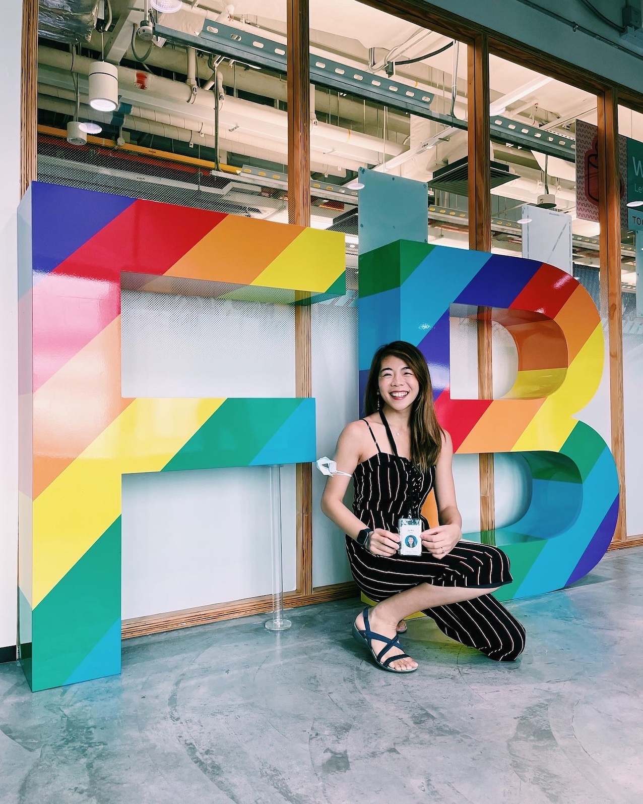
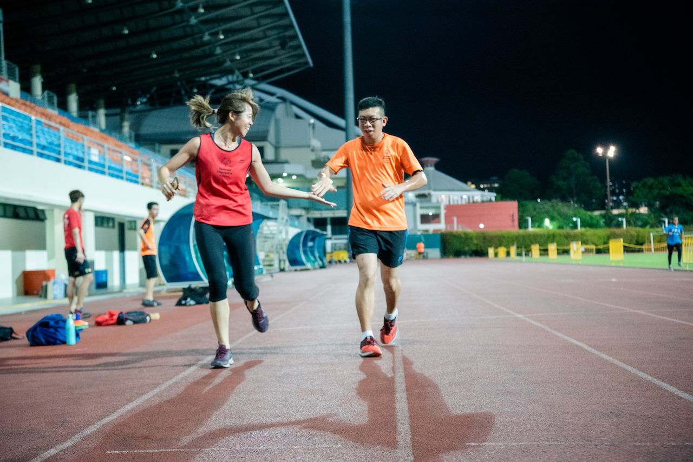

Jia Min Leong
Product Data Scientist at Meta
Product Data Scientist at Meta
I am a Product Data Scientist based in Singapore, passionate about uplifting small medium businesses in South East Asia. My main work today revolves around demand generation on social platforms at Meta, with past experience on fulfilment at GrabExpress. Highly organized, independent and adaptable; able to quickly learn new skills to accomplish projects with timeliness and quality while establishing rapport with members of diverse groups and teams
I graduated from Singapore Management University with a major in Marketing. In my personal time, I am a rock climbing enthusiast, tennis player and marathon runner. I have been volunteering at Special Olympics Singapore - Athletics since 2018 where I run long-distance alongside athletes with autism, GDD (global development delay).
Often I work on personal projects outside of work, you may find them here.
 